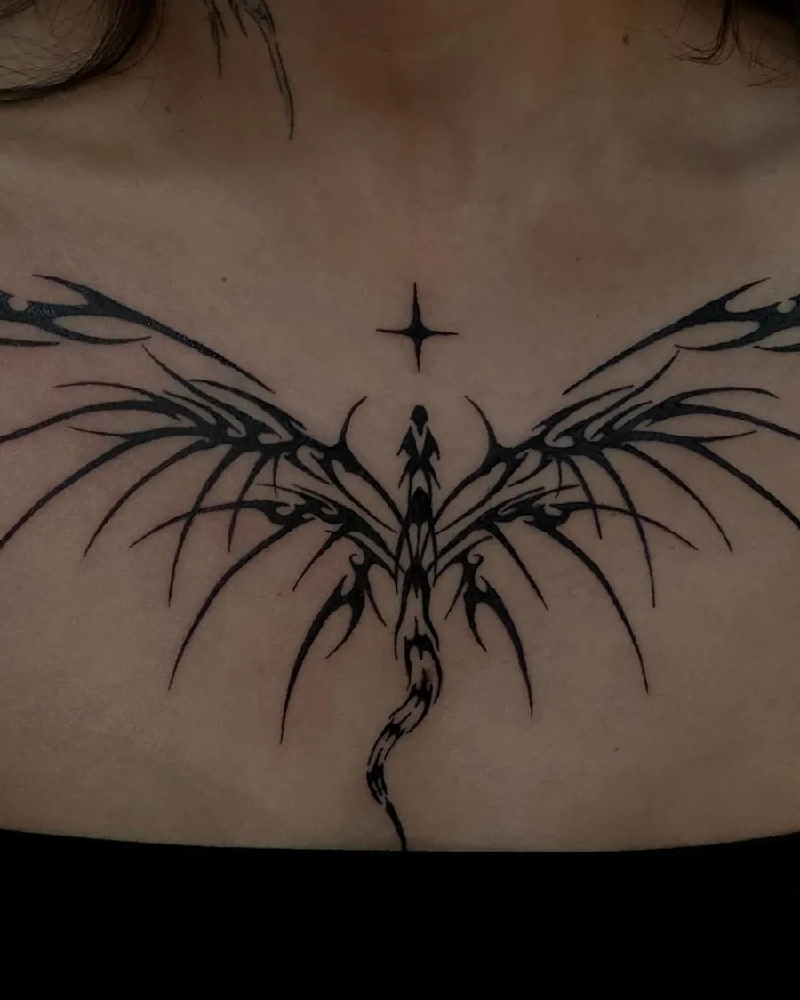
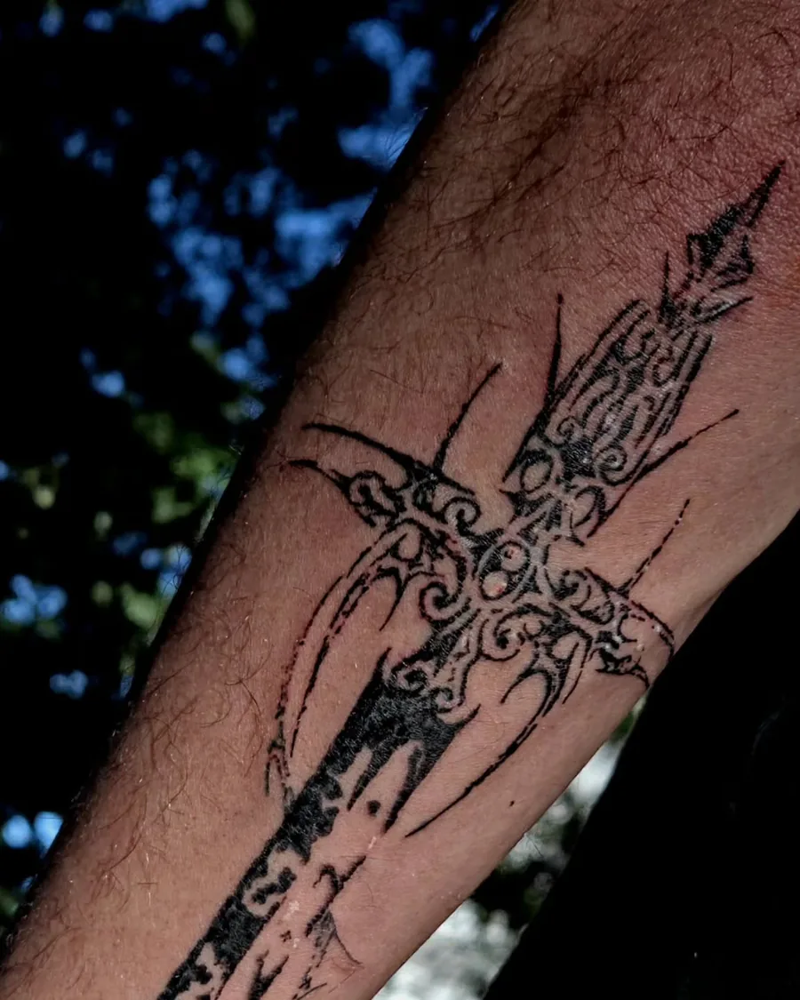
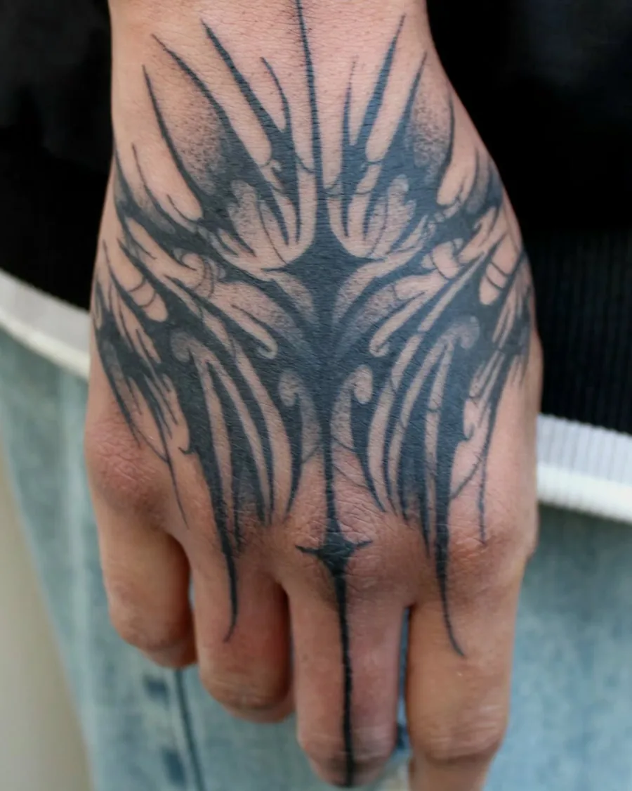
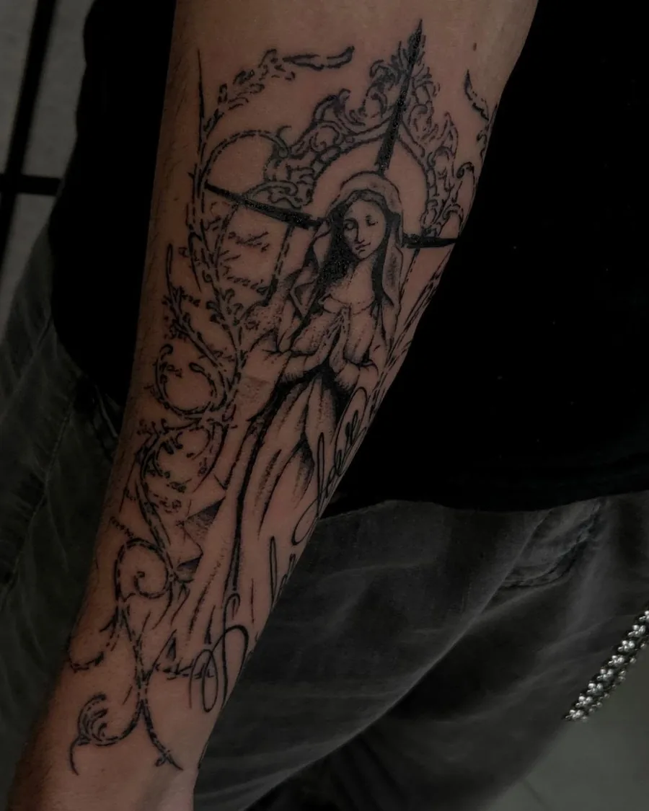
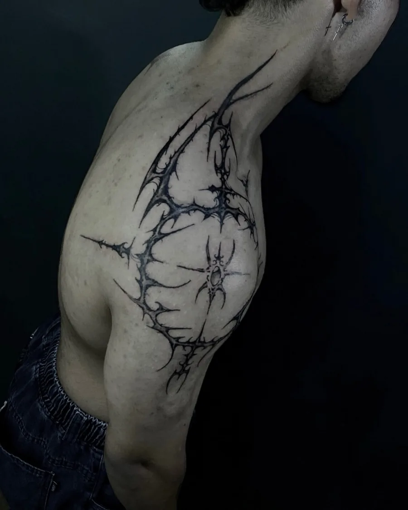
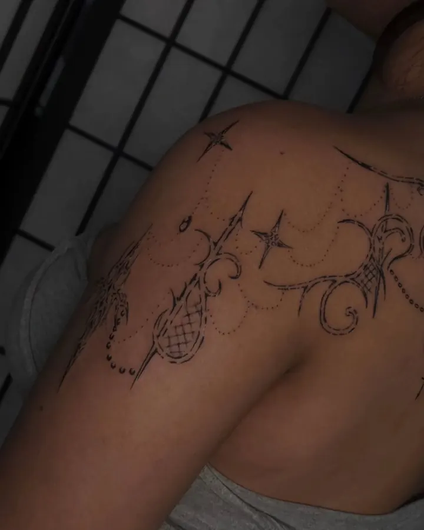
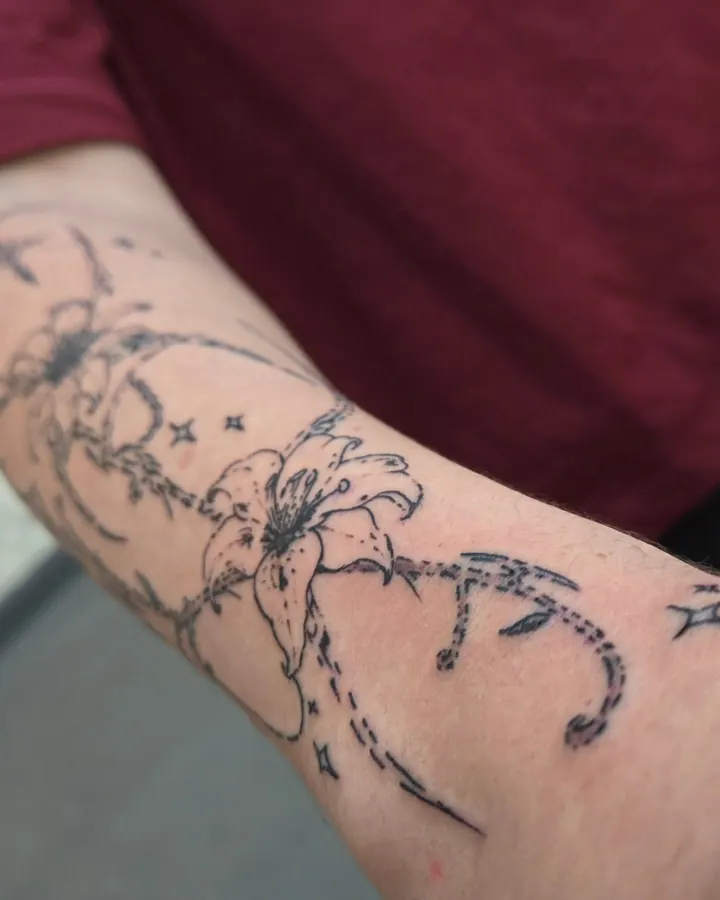

Tatuador em São Paulo
Padulla Ink
Cybertribal, cybersigilism e blackwork autoral. Cada desenho é feito pra um corpo só, no decalque ou no freehand, direto na pele.
- Vila Mariana, a 3 min do metrô Ana Rosa
- Artes 100% autorais





Disponíveis
Desenhos prontos, feitos uma vez só. Quem reservar primeiro leva. Toque em “Quero esse” e o pedido já sai com o desenho escolhido.

Estrela em halftone
Quero esse
Coração tribal
Quero esse
Anjo de pedra
Quero esse
Moonlight
Quero esse
Cruz ornamental
Quero esse
Sweet life com terço
Quero esse
Desenhos 100% autorais. Por favor, não copie. Quer algo só seu? Peça uma arte do zero.
Estilos
O fio que liga tudo é o cyber: traço fino e pontudo, preto pesado e desenho que acompanha o corpo.
Cybertribal
Tribal com ponta de agulha, em mão, peito, lombar e braço fechado.

Cybersigilism
Linhas finas, estrelas e espinhos que se espalham como sigilo.
Cybergótico
Espadas, adagas, anjos, caveiras e arquitetura gótica em blackwork.

Cyberfloral e caligrafia
Lírios que viram sigilo e letras longas no estilo pinstripe.
Portfólio
Trabalhos de 2023 a 2026, com fotos sem edição. Toque numa tattoo pra ver todas as fotos dela.
Como agendar
Leva dois minutos. O pedido sai pronto, você só cola na DM.
- 1
Monta o pedido
Escolhe um disponível ou conta a ideia, o lugar do corpo e o tamanho.
- 2
Manda na DM
O texto sai copiado com a palavra GOTH na frente. Abre a DM, cola e envia.
- 3
Recebe o orçamento
O Padulla responde com o valor e as datas livres.
- 4
Reserva com o sinal
A data só fica sua depois do sinal pago. No dia, o desenho vai pra pele.
Quanto custa?
Os disponíveis começam em R$ 280. Arte autoral depende do tamanho, do lugar e de quantas sessões ela pede, por isso o valor sai no orçamento.
Como funciona o sinal?
A data só fica reservada depois do sinal. O valor e a forma de pagamento vêm junto com o orçamento na DM.
Faz cobertura?
Faz. Já cobriu nome de ex com cybertribal e quatro tattoos antigas de uma vez no antebraço. Manda foto da tattoo atual no pedido.
O que é freehand?
É o desenho feito com caneta direto na pele, pensado pro encaixe do corpo. Dá pra misturar com decalque, como em boa parte do portfólio.
Posso fazer minha primeira tattoo com você?
Pode. Tem cliente que estreou com braço fechado em cybertribal. Marca no pedido que é a primeira, e o resto ele explica.
Cuidados depois
Cicatrização boa não é sorte. É cuidado certo nos primeiros dias.
Sol e atrito, longe
Sol direto e roupa pegando na região atrapalham a cicatrização.
Lava com calma
Nada de esfregar. Lava devagar e seca sem atrito.
Pomada na medida
Passa o produto indicado, na quantidade certa, sem exagero.
Casquinha fica
Puxar ou coçar pode marcar o desenho.
Deixa respirar
Roupa justa e suor demais irritam a pele e atrasam tudo.

Quem tatua
Padulla, tatuador cybergoth de São Paulo.
A primeira tattoo foi numa voluntária, em setembro de 2023. De lá pra cá, o traço foi ficando mais fino, mais pontudo e mais dele: cybertribal, cybersigilism e um gótico que puxa do rock, da arquitetura de igreja e da caligrafia antiga.
As referências aparecem no portfólio. Tem Deftones, Bring Me The Horizon, Tame Impala, House of the Dragon e até a pelagem de um gato bravo. Todo desenho é autoral, e quase sempre tem um pedaço feito à mão livre, direto na pele.
@padulla_ink“Tatuador sem referência é só uma impressora de Pinterest.”
Estúdio
O atendimento é com hora marcada. O endereço completo vai pela DM depois da reserva.
Estúdio Súbito
Vila Mariana, São Paulo-SP
- 3 minutos a pé do metrô Ana Rosa, linhas Azul e Verde
- Residente do estúdio
- @estudiosubito
Sua próxima tattoo começa aqui
Escolhe um disponível ou conta sua ideia. O Padulla responde com valor e data.
Agendar minha tattoo Prefere falar direto? Chama na DM